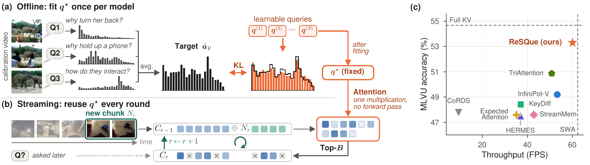
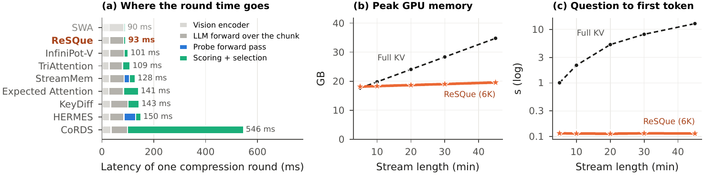
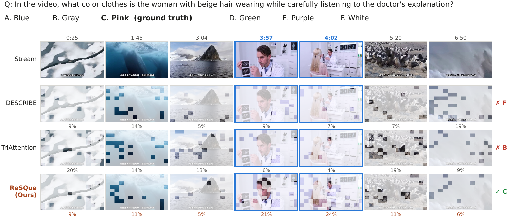
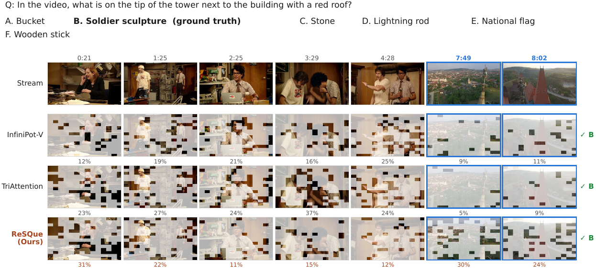
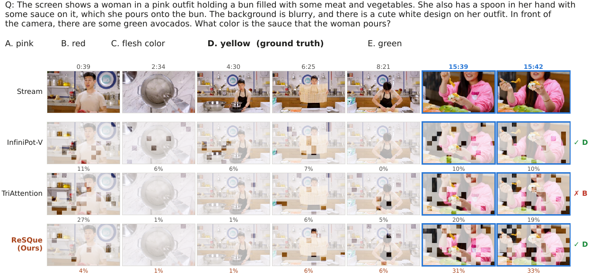
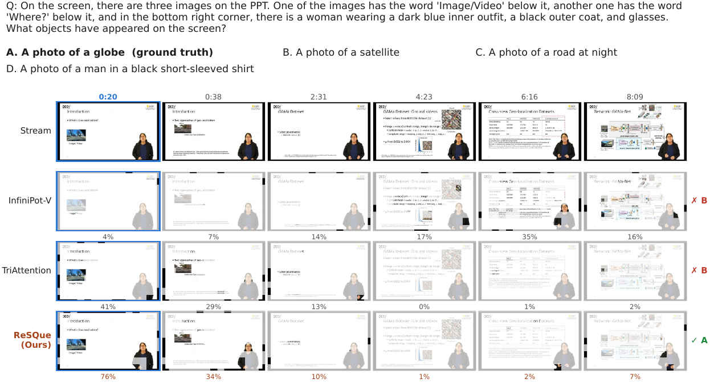
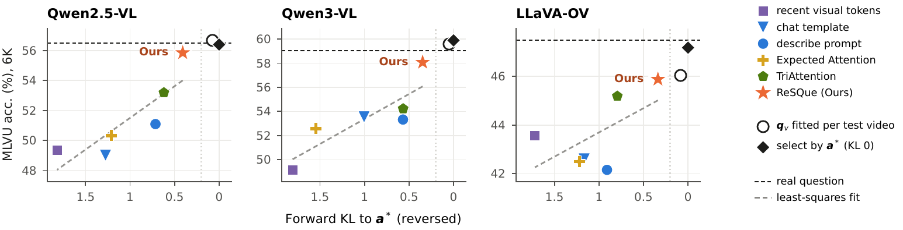
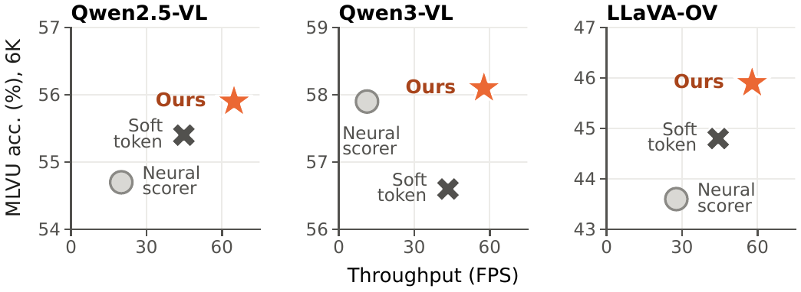

(a) ReSQue fits a few queries per attention head so that their attention matches the question-averaged attention on calibration videos. (b) During the stream, the fitted query is reused at every compression round and scores the cache without a forward pass. (c) MLVU accuracy at 6K against throughput (frames per second), averaged over three backbones.
TL;DR: We present ReSQue (Representative Surrogate Query), which learns a few reusable query vectors per attention head by matching the attention that future questions pay to the video. A single matrix product with these fixed queries scores the streaming KV cache — no extra forward pass — so it is more accurate than prior compressors at nearly the speed of a sliding window.
Abstract
Streaming video understanding requires multimodal large language models (MLLMs) to compress growing KV caches before future questions are known, risking the loss of relevant information. We introduce ReSQue (Representative Surrogate Query), which directly learns reusable queries to preserve information needed by future questions. We define oracle attention as the attention averaged over possible future questions, whose highest-scoring tokens maximize expected attention retention for a fixed cache. Since this oracle is unavailable, ReSQue constructs target attention by averaging question attention for each calibration video and directly optimizes head-level query vectors to match its distribution. Once learned, these queries are reused across videos and compression rounds, scoring cached keys without additional model or scorer-network forward passes. We evaluate ReSQue on three MLLM backbones and four video QA benchmarks. ReSQue achieves the best or tied-best accuracy in 25 of 27 long-video settings. Further analyses demonstrate closer alignment with future-question attention and efficient streaming compression with low recurring computational overhead.
Overview
In streaming video, the KV cache must be compressed before any question arrives. If the future questions were known, we would keep the visual tokens that they attend to most. ReSQue approximates this ideal with a small set of learned, fixed query vectors per attention head: they are fitted once per model and then reused for every video and every compression round.
Averaging the attention of all future questions over the cached visual tokens gives the oracle attention. Keeping its highest-scoring tokens maximizes the expected attention retained by a fixed-size cache.
The oracle is unknown, so we build a target attention per calibration video by averaging the attention of its questions, and optimize S = 8 query vectors per head to match that distribution with a KL divergence. The fit takes under two hours on one GPU.
At every round the fixed queries score the cached keys with one batched matrix product — no model or scorer-network forward pass — and each KV head keeps its top-B tokens.
Quantitative Results
Under the same budget of about 6K, 3K and 1K visual tokens per head, ReSQue achieves the best or tied-best accuracy in 25 of the 27 long-video settings of three backbones, three benchmarks and three budgets. Its overall accuracy leads the strongest baseline, TriAttention, by 0.4 to 3.0 points, and at 6K it matches the uncompressed model on Qwen2.5-VL.
Accuracy (%) at 6K / 3K / 1K visual tokens per head. MLVU: average over task groups; Video-MME: medium and long videos; LongVideoBench: average over the four video-length groups; Overall: mean of the three. Bold: best, underline: second best (Full KV excluded).
Efficiency
Because the queries are fixed, scoring needs no forward pass: a compression round of ReSQue is close to that of SWA, which scores nothing, while it is 1.1–5.9× faster than the other compressors on Qwen2.5-VL.

Streaming Benchmark: VStream-QA
When questions arrive while the stream is playing, ReSQue is the most accurate over all questions on Qwen2.5-VL and LLaVA-OV, and ties TriAttention on Qwen3-VL.
Accuracy (%) at about 6K tokens per head on the ego-centric (Ego) and movie (Mov.) splits and on all questions; open-ended answers are judged by an LLM (gpt-5-mini).
Qualitative Examples
We draw the patches that each query keeps in one head when the question arrives. ReSQue keeps more of the evidence frames (blue) that the question actually reads.




Analysis
Why can a single fitted query stand in for questions it has never seen?
The attention induced by ReSQue is the closest to the question-averaged attention (lowest KL) on every backbone, and it is the most accurate of the deployable queries. Across queries, a lower KL goes with a higher accuracy (Spearman 0.94 on the Qwen models).
Recomputing the query of a text prompt at every round brings no consistent gain over computing it once (−1.6 to +1.2 points). A learned soft token or scorer network adds overhead: ReSQue is 1.3–1.4× and 2.1–5.2× faster and 0.5–1.5 / 0.2–2.3 points more accurate.
TriAttention and Expected Attention estimate importance from query statistics. Fitting the queries to the attention itself yields substantially closer alignment, even when the same calibration questions are used.


BibTeX
@misc{resque,
title = {ReSQue: Representative Surrogate Query for Streaming Video KV Cache Compression},
author = {Anonymous}
}